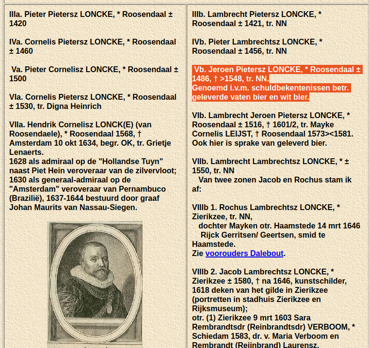

http://home.online.nl/audeman/Loncke/Loncke.htm
https://docs.google.com/document/d/1QvcH2ESmcBRdsOWX0wX_hRexqFPYuKjJQsUwxTE0eGI/edit?tab=t.0
winter: normaal
zomer:extreem koel
1628 eerste gebeurtenissen
Generatie 13 (stambetovergrootouders)
4116 Jan Jans Kellenaer, geboren in 02-1632 in Overschie. Hij is gedoopt op 08-02-1632 in Overschie. Jan is overleden.
Hij trouwde met
4117 Jacomijntje NN. Jacomijntje is overleden.
https://www.nevenzel.nl/04%20Staringcollege/NMKDKa.html
https://rjb.x-cago.com//GARJB/1962/12/19621231/GARJB-19621231-0255/story.pdf
4134 Leendert Denijs. Leendert is overleden.
Hij trouwde met
4135 Catelijntje Pieters. Catelijntje is overleden.
4144 Henrdrik Jansz Stolck, geboren in 1615 in Heinenoord. Henrdrik is overleden in 1662 in Heinenoord, 46 of 47 jaar oud.
Hij trouwde, 19 of 20 jaar oud, op 03-06-1635 in Heinenoord met de 23-jarige
4145 Neeltje Paulusdr, geboren in 11-1611 in Heinenoord. Zij is gedoopt op 20-11-1611 in Heinenoord. Neeltje is overleden.
4320 Cornelis Crijnse Quist, geboren omstreeks 1592 in Ouwerkerk. Cornelis is overleden omstreeks 1667 in Kempenhofstede, ongeveer 75 jaar oud.
Hij trouwde, ongeveer 24 jaar oud, op 04-09-1616 in Stavenisse met de ongeveer 20-jarige Janneken Janse Jonkswager. Cornelis en Janneken gingen op 24-06-1616 in Stavenisse in ondertrouw.
4321 Janneken Janse Jonkswager, geboren omstreeks 1596 in Middelburg. Janneken is overleden op 02-08-1631 in Scherpenisse, ongeveer 35 jaar oud.
4322 Michiel Cornelisz Rolle, geboren omstreeks 1614. Michiel is overleden op 11-01-1659 in Tholen, ongeveer 45 jaar oud.
Hij trouwde met
4323 Berbel Cornelisse Braber, geboren omstreeks 1608. Berbel is overleden op 18-03-1640 in Tholen, ongeveer 32 jaar oud.
4340 Adriaen van Rossum. Adriaen is overleden.
Hij trouwde met
4341 Sara Meertens. Sara is overleden.
4476 Claes Canaer. Claes is overleden.
4512 Jan Jobs Carper, geboren omstreeks 1607 in Reimerswaal. Jan is overleden.
4520 Pieter Pieters Loncke, geboren in 1595 in Scherpenisse. Pieter is overleden.
Hij trouwde, 26 of 27 jaar oud, op 08-05-1622 in Bergen op Zoom met Maijken Jobs. Pieter en Maijken gingen op 23-04-1622 in Scherpenisse in ondertrouw.
4521 Maijken Jobs, geboren in Scherpenisse. Maijken is overleden.
4522 Huijbrecht Jobsze Cerper, geboren omstreeks 1598 in Reimerswaal. Huijbrecht is overleden, ongeveer 69 jaar oud. Hij is begraven op 22-09-1667 in Tholen. Huijbrecht is weduwnaar van Janneken Adriaens (ovl. vóór 1634), met wie hij trouwde (1), ten hoogste 21 jaar oud, vóór 1619.
Hij trouwde (2), ongeveer 36 jaar oud, op 14-05-1634 in Tholen met Lijncken Michiels (zie 4523 hieronder). Huijbrecht en Lijncken gingen op 29-04-1634 in Tholen in ondertrouw.
4523 Lijncken Michiels. Lijncken is overleden in 1641 in Tholen. Zij is begraven op 14-07-1641 in Tholen. Lijncken is weduwe van Marinus Adriaens Camhoot (ovl. vóór 1634), met wie zij trouwde (1) omstreeks 1625.
4528 Laureijs Engele Gastelaar. Laureijs is overleden omstreeks 1690 in Bergen op Zoom.
Hij trouwde met
4529 Cornelia de Hout. Cornelia is overleden na 1690.
4560 Adriaen Marinusse Duijvelaar, geboren omstreeks 1585 in Poortvliet. Adriaen is overleden in 1626 in Poortvliet, ongeveer 41 jaar oud. Adriaen trouwde (2), ongeveer 33 jaar oud, op 23-06-1618 in Scherpenisse met Maijken Jacobs.
Hij trouwde (1), ongeveer 29 jaar oud, omstreeks 1614 met
4561 Adriaenke Cornelisse Lops(se), geboren in Poortvliet. Adriaenke is overleden vóór 1618 in Poortvliet.
4564 Matthijs Dingemanse Ardon, geboren in 09-1618 in Hooge en Lage Zwaluwe. Hij is gedoopt op 23-09-1618 in Hooge en Lage Zwaluwe. Matthijs is overleden.
Hij trouwde met
4565 Maaike Cornelisdr Vergrave. Maaike is overleden.
5472 Pieter Adriaans van Borne. Pieter is overleden in 1613 in Scherpenisse.
Hij trouwde op 26-04-1608 in Scherpenisse met
5473 Nelleken Matthijsse. Nelleken is overleden.
5474 Anthonij. Anthonij is overleden.
5482 Jan Janse van Genee (Guinea), geboren omstreeks 1578 in Sint Annaland. Jan is overleden in 1618 in Scherpenisse, ongeveer 40 jaar oud. Jan is weduwnaar van Coppemijnken Hendrix (ovl. vóór 1611). Jan is weduwnaar van Maijken Dignus (±1583-vóór 1614), met wie hij trouwde (2), ongeveer 33 jaar oud, in 08-1611 in Scherpenisse.
Hij trouwde (3), ongeveer 36 jaar oud, in 04-1614 in Scherpenisse met Engelken Jacobs (zie 5483 hieronder). Jan en Engelken gingen op 12-04-1614 in Scherpenisse in ondertrouw.
5483 Engelken Jacobs, geboren in Poortvliet. Engelken is overleden na 1642. Engelken trouwde (2) in 11-1627 met Jan Marijnissen.
5484 Cornelis Cornelisse Gortssen, geboren omstreeks 1588 in Douai, Frankrijk. Cornelis is overleden in 04-1645 in Goes, ongeveer 57 jaar oud. Hij is begraven op 10-04-1645 in Goes.
Hij trouwde met
5485 Tanneken Hubrechts, geboren in Hulst. Tanneken is overleden.
5486 Abraham Borm(s), geboren in Stekene, Belgie. Abraham is overleden.
Hij trouwde met
5487 Pieta Huge. Pieta is overleden.
5632 Jacob Gelock. Jacob is overleden.
Hij trouwde met
5633 Elisabeth Leenderts. Elisabeth is overleden.
5636 Cornelis Giljam. Cornelis is overleden.
Hij trouwde met
5637 Neeltje Adriaens. Neeltje is overleden.
5680 Pieter Bierens, geboren omstreeks 1595. Pieter is overleden.
Hij trouwde met
5681 Maria, geboren omstreeks 1600. Maria is overleden.
5856 Jacob Moeijelijker, geboren omstreeks 1580. Jacob is overleden.
5858 Lambrecht Adriaenssen. Lambrecht is overleden.
5868 Jacob Moeijelijker (dezelfde als 5856).
5870 Lambrecht Adriaenssen (dezelfde als 5858).
https://nl.wikipedia.org/wiki/1628
E VOORTGANG VAN DE OORLOG
De oorlog te land staat in 1628 vrijwel stil, het weer is erg slecht. De Staten bou- Den schansen aan de Schelde, op Tholen, bij Steenbergen en aan de postilanboun de Eems. Op zeeiser wepactiviteit. Pieter Pietersz. Hein uit Delfshat stiflank aan deert als vice-admiraal op 8 en 9 september in de Baai van Matanzas op Cuba een aantal Spaanse schepen met kisten zilver, goud, edelstenen en koopmansgoed waarde van meer dan 11 miljoen gulden: de "Zilvervloor. Frederik Hendrik wendr de opbrengt grotendeels aan voor het beleg van Den Bosch in 1629. Nadat hij ent ge tijd in Engeland op gunstige wind en lichte nachten heeft gewacht, komt Piet Hein begin januari in het vaderland terug. Hij sneuvelt in 1629 bij Dungeness,
Voor gegevens uit Kassel zie 1610/21, noot to en voor de datum van de wijnoogst bij
lage 11. Van Wassenaer, Amsterdam XIV (1627) 18, 57, 57, 58; Van der Eycken (1986) 261
cit. parochieregister Maasmechelen. Gegeven Bergen by Vanderlinden (1924) 150, bron: Vinchant, Oost-Friesland bij Wer- kinn III (1961) 149, 150; de datum van 17 nov. is vrij zeker een hypercorrectie (ou
de/nieuwe stijl). 3 Vanderlinden (1924) 150, bron: Vinchant; cf. Douxchamps-Lefevre & Dufour (1976)
11.
4 Weikinn III (1961) 149.
5 Van der Capellen I (ed. 1777) 443, 449.450; Gottschalk III (1977) 102 meent ten on- rechte dat van springvloed geen sprake is; Van Wassenaer XIV (1628) 57, 57, 58,757, 84, XV (1629) 27'; schade nabij Antwerpen: Reidanus/Van den Sande cont. (ed. 1650)
9de boek, 130.
6 Van Wassenaer, Amsterdam XIV (1627) 59.
7 Van Moorsel, Heeze, 7.
8 Weikinn II (1961) 150; latere bron, niettemin geloofwaardig daar het spoort met de an- dere gegevens.
397
7:32
ERNSTIG ONGELUK OP HET IJ TE AMSTERDAM
Op de 17de januari heeft op het IJ bij Amsterdam een ernstig ongeluk plaats met een veerschuit. Daarin bevinden zich onder anderen de zogenaamde winterkoning Frederik van de Palts en zijn 15-jarige zoon. De koning is zuinig: hij heeft het schip gehuurd en neemt zoveel mogelijk betalende gasten mee. Men gaat 'Piet Heyns buit bekijken. Maar zo ver komt het niet. Ter hoogte van de Holle Sloot raakt de schuit